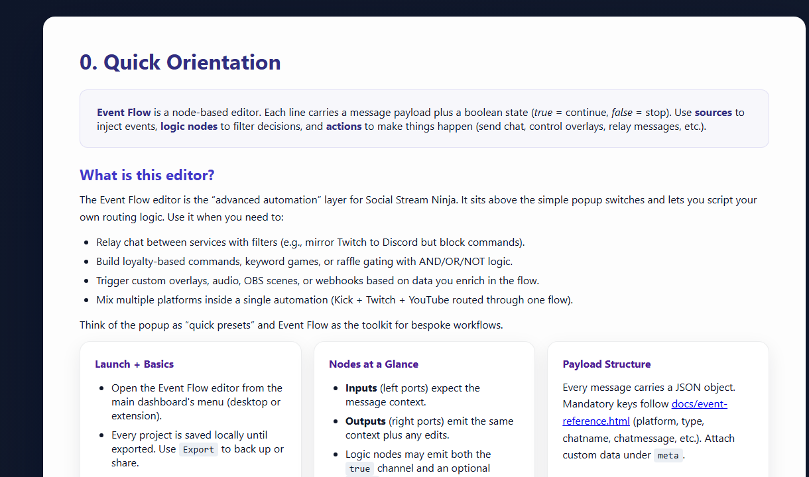
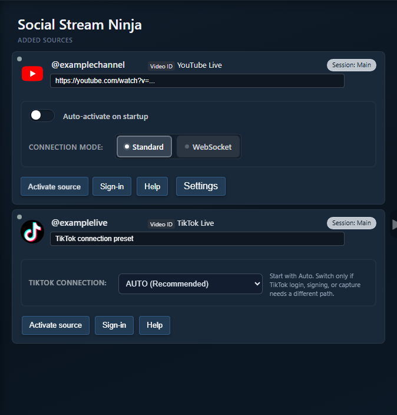

On This Page
What Is a type?
type is the canonical source identifier on an incoming Social Stream payload. Overlays, URL filters, APIs, and Event Flow use it to tell platforms and source variants apart.
{
"type": "youtubeshorts",
"chatname": "Ava",
"chatmessage": "Hello from Shorts"
}| Name | Meaning | Do Not Confuse It With |
|---|---|---|
type |
The incoming payload source, such as youtube or instagramlive. |
A display label, connection mode, or event name. |
event |
What happened, such as superchat, gift, or viewer_update. |
The platform that produced it. |
sourceName |
An optional channel, room, or source display name. | The stable value used by a From Source trigger. |
tid |
The originating tab or desktop source-window ID used for reply and source exclusion. | A platform type. |
Desktop app target |
The saved category used to choose a URL, mode, and capture script. | A guarantee that every emitted payload has the same string. |
Important: Event Flow's From Source trigger compares its configured value directly with message.type. Use the exact lowercase payload value.
Common and Confusing Types
| Capture or UI Name | Payload Type | Why It May Be Surprising |
|---|---|---|
| YouTube live chat | youtube |
DOM, API polling, and WebSocket/streaming describe transport, not separate types. |
| YouTube Shorts live chat | youtubeshorts |
It is distinct for incoming filters and Event Flow relay destinations, while shared YouTube controls still treat both variants as one family where needed. |
| Instagram Live / InstaFeed live | instagramlive |
Instagram post and feed comments use instagram. |
| TikFinity | tiktok |
TikFinity is the connector; the normalized platform remains TikTok. |
| X | x, or legacy twitter with the Twitter-branding option |
Existing filters may intentionally preserve the older name. |
| Bilibili regional choices | bilibili |
Desktop targets and scripts may say bilibilicom or bilibilitv, while payloads are normalized. |
| OBS system events | obs |
They are not chat sources, but can enter Event Flow with events such as scene_changed. |
Use the Event Reference for the field contract and Supported Sites for public platform setup names.
YouTube Shorts and Event Flow
Incoming matching is exact: use youtubeshorts in a From Source trigger for Shorts messages, and youtube for regular YouTube live chat.
Outgoing matching is also exact: Relay Chat treats them as separate destinations.
- Destination
youtubesends only to regular YouTube live-chat windows. - Destination
youtubeshortssends only to YouTube Shorts live-chat windows. - To reach both, add one action for each destination or relay to all platforms excluding the source.
Other YouTube-wide controls may intentionally handle both types as one platform family. This does not change the exact Event Flow matching above.
Troubleshooting Older Versions
Older versions grouped both relay destinations, so two actions could send twice to each YouTube window. Update Social Stream Ninja if that happens. A Reflection Filter prevents relay loops, but it does not correct overlapping destination matching in those older versions.

Continue with the Event Flow Guide or YouTube Setup Guide.
Instagram Live vs Instagram Comments
Use instagramlive for live-room chat captured by the Instagram Live or InstaFeed live source. Use instagram for non-live feed, post, or static comments.
- Live chat flow: From Source =
instagramlive. - Post/comment flow: From Source =
instagram. - Both: use two triggers feeding one shared action, or an Any Source trigger followed by a type-aware filter.
The visible Instagram brand is not enough to choose the type; the content context separates the two.
Generic, Custom, and Unnamed Sources
sources/generic.js is a broad DOM-capture fallback. It looks for common chat rows, names, messages, avatars, and inputs. It starts with generic, then normally derives a lowercase type from a known platform or the page hostname.
- Use it to prove that an ordinary DOM chat can be captured before writing a dedicated source.
- Do not expect reliable event, moderation, deletion, virtualized-list, or closed shadow-DOM support.
- A hostname-derived type is convenient, but not a permanent public contract. Confirm the emitted payload before building filters around it.
- If a source has no established platform name, choose one stable lowercase
type. UsesourceNamefor the human-facing room or channel label. - If no stable identity exists yet,
genericis safer than changing type per message. External integrations commonly use a deliberate value such asexternal.
Once users, overlays, or flows depend on a new type, document it in the Event Reference rather than silently renaming it.
Desktop App Script Injection
The desktop app saves a source target, chooses one or more sourceFile/sourceFiles, opens a source window, and injects shared capture scripts from this project. A Chrome-runtime compatibility bridge carries captured messages and reply commands between the page and app.
- A target and script filename need not match the payload type. The
youtubeshortstarget loadssources/youtube.js, which emitsyoutubeoryoutubeshortsfrom page context. - Bilibili targets similarly map to shared/regional scripts while emitting
bilibili. sources/inject/*.jsfiles are page-context helpers for sockets or page variables. The source wrapper remains responsible for the canonical payload.- When several scripts are injected, avoid making every helper claim the same outbound destination. Capture identity and reply capability are separate concerns.
- Source capture changes belong in this repository's
sources/files. The desktop app consumes them; its packaged fallback copy is not the source of truth.

Maintainers can trace setup in the desktop app's index.html source-window creation, then main.js and preload.js for injection and bridging.
Replying and Relaying to Sources
Incoming identity and outbound capability are related, but they are not the same contract.
| Action | How It Chooses | Common Failure |
|---|---|---|
| Reply to source | Uses tid to address the exact originating tab/window. |
No tid, or that capture mode cannot send chat. |
| Relay to a platform | Asks open sources whether they support that outbound destination. | The selected variant has no matching open source window, or the source cannot send chat. |
| Relay to all except source | Broadcasts to routeable sources and excludes the originating tid. |
A source cannot accept automated input, or a reflection is captured again. |
- A source script's
getSourceresponse is an outbound-routeability signal. Shared YouTube controls may group both variants, while Relay Chat adds exact Shorts URL context for destination matching. - Generic capture can find and focus likely inputs, but that does not guarantee the site will accept an automated send.
- API/WebSocket modes may send through platform APIs instead of typing into the visible page.
- In the desktop app, Bot reply-only (no capture) keeps a source available for replies/status while suppressing its normal captured messages.
- Test reply support with one source window before building a multi-platform relay.
Where to Find Exact Details
- Event Reference: canonical fields and platform event names.
- Event Flow Guide: triggers, actions, templates, reflection handling, and tests.
- Standalone App Modes: source-window and connection-mode behavior.
- Supported Sites: platform names and setup requirements.
- Generic and Custom Sources: fallback and external capture.
- Desktop App Source Windows: target, script, bridge, and reply-only internals.
- Adding a Source: source contracts, injection helpers, manifests, and docs.
When debugging, inspect one raw payload and record its type, event, sourceName, and tid. That usually separates incoming matching, outbound routing, and capture duplication.